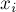
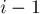

MAXimal
добавлено: 11 Jun 2008 11:21
редактировано: 15 Sep 2011 1:36
Содержание [скрыть]
Задача Джонсона с двумя станками
Имеется  деталей и два станка. Каждая деталь должна сначала пройти обработку на первом станке, затем — на втором. При этом
деталей и два станка. Каждая деталь должна сначала пройти обработку на первом станке, затем — на втором. При этом  -ая деталь обрабатывается на первом станке за
-ая деталь обрабатывается на первом станке за  времени, а на втором — за
времени, а на втором — за  времени. Каждый станок в каждый момент времени может работать только с одной деталью.
времени. Каждый станок в каждый момент времени может работать только с одной деталью.
Требуется составить такой порядок подачи деталей на станки, чтобы итоговое время обработки всех деталей было бы минимальным.
Эта задача называется иногда задачей двухпроцессорного обслуживания задач, или задачей Джонсона (по имени S.M. Johnson, который в 1954 г. предложил алгоритм для её решения).
Стоит отметить, что когда число станков больше двух, эта задача становится NP-полной (как доказал Гэри (Garey) в 1976 г.).
Построение алгоритма
Заметим вначале, что можно считать, что порядок обработки деталей на первом и втором станках должен совпадать. В самом деле, т.к. детали для второго станка становятся доступными только после обработки на первом, а при наличии нескольких доступных для второго станка деталей время их обработки будет равно сумме их независимо от их порядка — то выгоднее всего отправлять на второй станок ту из деталей, которая раньше других прошла обработку на первом станке.
Рассмотрим порядок подачи деталей на станки, совпадающий с их входным порядком: .
Обозначим через  время простоя второго станка непосредственно перед обработкой -ой детали (после обработки -ой детали). Наша цель — минимизировать суммарный простой:

Для первой детали мы имеем:
Для второй — т.к. она становится готовой к отправке на второй станок в момент времени , а второй станок освобождается в момент времени , то имеем:
Третья деталь становится доступной для второго станка в момент , а станок освобождается в , поэтому:
Таким образом, общий вид для выглядит так:
Посчитаем теперь суммарный простой . Утверждается, что он имеет вид:

где
(В это можно убедиться по индукции, либо последовательно находя выражения для суммы первых двух, трёх, и т.д. .)
Воспользуемся теперь перестановочным приёмом: попробуем обменять какие-либо два соседних элемента и  и посмотрим, как при этом изменится суммарный простой.
и посмотрим, как при этом изменится суммарный простой.
По виду функции выражений для понятно, что изменятся только и ; обозначим их новые значения через и .
Таким образом, чтобы деталь шла до детали , достаточно (хотя и не необходимо), чтобы:
(т.е. мы проигнорировали остальные, не изменившиеся, аргументы максимума в выражении для , получив тем самым достаточное, но не необходимое условие того, что старое меньше либо равно нового значения)
Отняв  от обеих частей этого неравенства, получим:
от обеих частей этого неравенства, получим:
или, избавляясь от отрицательных чисел, получаем:
Тем самым, мы получили компаратор: отсортировав детали по нему, мы, согласно приведённым выше выкладкам, придём к оптимальному порядку деталей, в котором нельзя переставить местами никакие две детали, улучшив итоговое время.
Впрочем, можно ещё больше упростить сортировку, если посмотреть на этот компаратор с другой стороны. Фактически он говорит нам о том, что если минимум из четырёх чисел достигается на элементе из массива  , то соответствующая деталь должна идти раньше, а если на элементе из массива
, то соответствующая деталь должна идти раньше, а если на элементе из массива  — то позже. Тем самым мы получаем другую форму алгоритма: отсортировать детали по минимуму из
— то позже. Тем самым мы получаем другую форму алгоритма: отсортировать детали по минимуму из  , и если у текущей детали минимум равен , то эту деталь надо обработать первой из оставшихся, иначе — последней из оставшихся.
, и если у текущей детали минимум равен , то эту деталь надо обработать первой из оставшихся, иначе — последней из оставшихся.
Так или иначе, получается, что задача Джонсона с двумя станками сводится к сортировке деталей с определённой функцией сравнения элементов. Таким образом, асимптотика решения составляет  .
.
Реализация
Реализуем второй вариант описанного выше алгоритма, когда детали сортируются по минимуму из , и затем отправляются в начало либо в конец текущего списка.
struct item { int a, b, id; bool operator< (item p) const { return min(a,b) < min(p.a,p.b); } }; sort (v.begin(), v.end()); vector<item> a, b; for (int i=0; i<n; ++i) (v[i].a<=v[i].b ? a : b) .push_back (v[i]); a.insert (a.end(), b.rbegin(), b.rend()); int t1=0, t2=0; for (int i=0; i<n; ++i) { t1 += a[i].a; t2 = max(t2,t1) + a[i].b; }
Здесь все детали хранятся в виде структур , каждая из которых содержит значения и и исходный номер детали.
Детали сортируются, затем распределяются по спискам (это те детали, которые были отправлены в начало очереди) и (те, что были отправлены в конец). После этого два списка объединяются (причём второй список берётся в обратном порядке), и затем по найденному порядку вычисляется искомое минимальное время: поддерживаются две переменные  и — время освобождения первого и второго станка соответственно.
и — время освобождения первого и второго станка соответственно.
Литература
- S.M. Johnson. Optimal two- and three-stage production schedules with setup times included [1954]
- M.R. Garey. The Complexity of Flowshop and Jobshop Scheduling [1976]